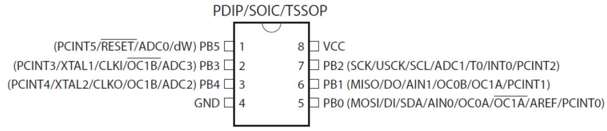
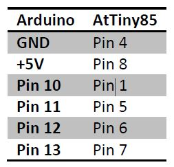
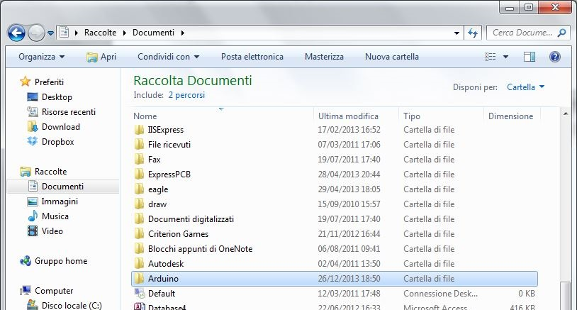
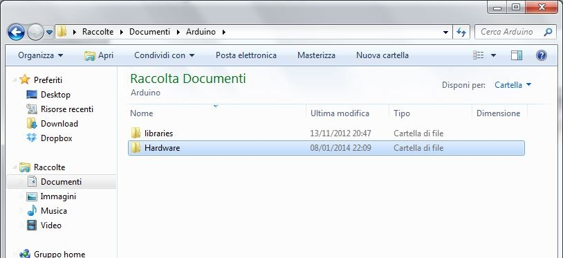

L’AtTiny85 e un micro controllore molto popolare perché utilizzabile nel sistema Arduino.

Il primo problema che sorge quando lo si vuole utilizzare è come si possa caricarvi un programma.
Selezionare lo sketch “ArduinoISP”: File-->Esempi--> ArduinoISP.
Collegare Arduino al computer tramite il cavo USB e caricare lo sketch.

Scaricare l’archivio https://github.com/damellis/attiny/archive/ide-1.0.x.zip ed estrarlo. Inserire la cartella “Tiny” in “Documenti\Arduino\Hardware\” del computer.

Chiudere e riaprire il software Arduino qualora fosse aperto. Su “Strumenti-->Programmatore” selezionare “Arduino as ISP”. Su “Strumenti-->Tipo di Arduino” selezionare l’AtTiny85 che si possiede oppure AtTiny85 1MHz(Se selezionate il clock errato le istruzioni verranno eseguite più/meno velocemente). Adesso è possibile caricare il programma per l’AtTiny85 tramite Arduino.